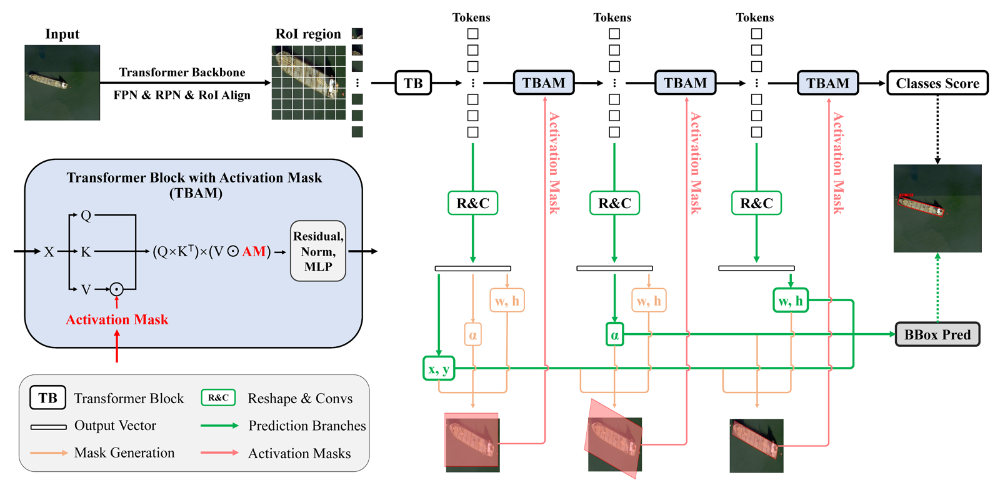
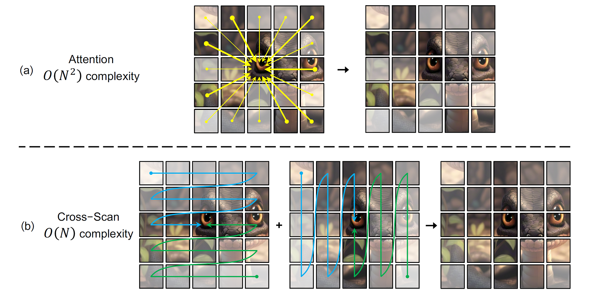

Hongtian YuPh.D. candidate
|

|
Hongtian YuPh.D. candidate
|
|
I am a Ph.D. candidate of Learning and Machine Perception Laboratory (LAMP) in School of Electronic, Electrical and Communication Engineering, University of Chinese Academy of Sciences, advised by Prof. Qixiang Ye and PostDoc. Yunfan Liu. From September 2024 to present, I am also studying at Zhongguancun Academy under the National Artificial Intelligence Program at the same time. I received my B.E. degree from University of Chinese Academy of Sciences in June 2021.
My research interests lie in the field of computer vision, with a focus on object detection and representation learning. Currently, I am engaged in research at the intersection of Artificial Intelligence and High-Energy Physics (AI×HEP). I also serve as the initiator and leader for the student-proposed project, "Intelligent Physical Analysis Models for Massive High-Energy Physics Data", at Zhongguancun Academy.
|  |
Spatial Transform Decoupling for Oriented Object Detection
Hongtian Yu, Yunjie Tian, Qixiang Ye, Yunfan Liu The 38th Annual AAAI Conference on Artificial Intelligence, 2024 [paper] [arXiv] [code] |
|  |
VMamba: Visual State Space Model
Yue Liu, Yunjie Tian, Yuzhong Zhao, Hongtian Yu, Lingxi Xie, Yaowei Wang, Qixiang Ye, Yunfan Liu The 37th Advances in Neural Information Processing Systems, 2024 [paper] [arXiv] [code] [usage example in Oriented Object Detection] |
 |
vHeat: Building Vision Models upon Heat Conduction
Zhaozhi Wang, Yue Liu, Yunfan Liu, Hongtian Yu, Yaowei Wang, Qixiang Ye, Yunjie Tian [arXiv] [code] |
 |
Vision Calorimeter: Migrating Visual Object Detector to High-energy Particle Images
Hongtian Yu, Yangu Li, Yunfan Liu, Yunxuan Song, Xiaorui Lyu, Qixiang Ye In Peer Review: IEEE Transactions on Image Processing 2025 [arXiv] [code] |
 |
ANT: Anti‑Neutron Transformer for High‑Energy Particle Detection
Hongtian Yu, Yangu Li, Yuyang Huang, Xiaorui Lyu, Qixiang Ye In Peer Review: Pattern Recognition 2026 [code] |